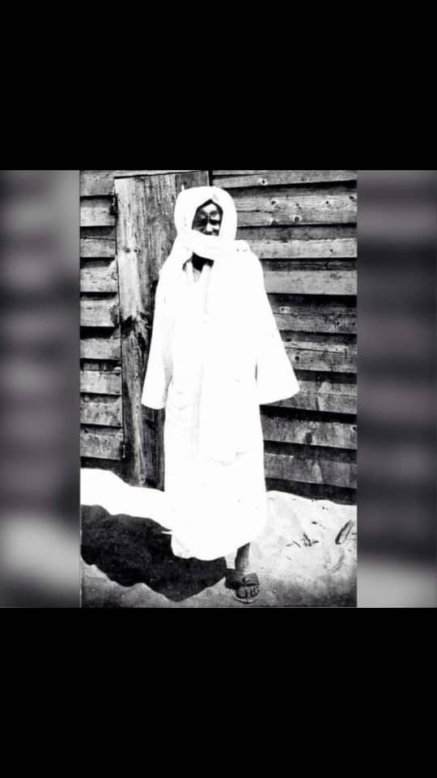
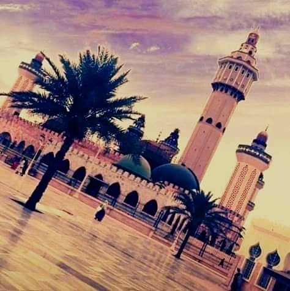
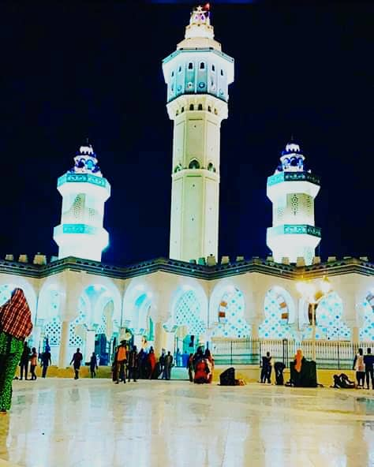
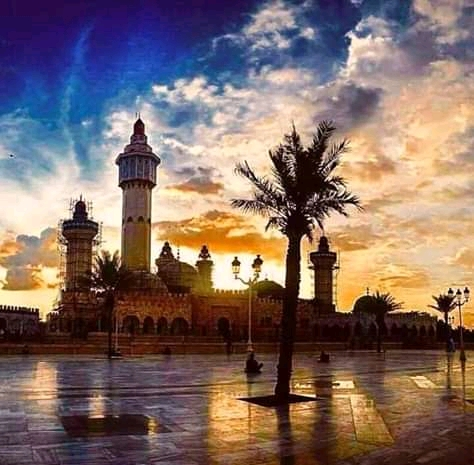
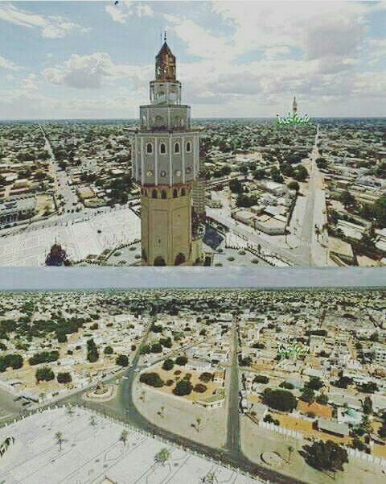
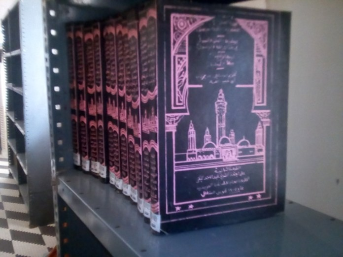
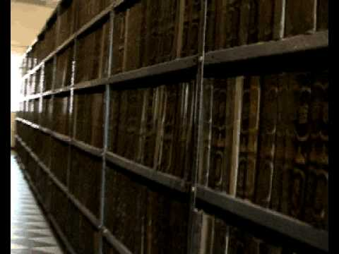
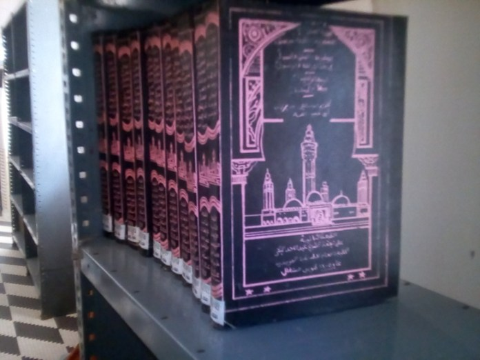
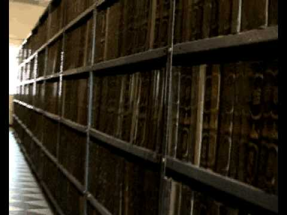

Fondée en 1887, par Cheikh Ahmadou Bamba,de son vrai nom Muhammad Ibn Muhammad Ibn Habiballah. Ce dernier a composé de très nombreux ouvrages dans les domaines de la jurisprudence, de la théologie, du soufisme, de la bonne éducation... Touba est la capitale du Mouridisme,elle se trouve à 197km l'est de la capitale Dakar dans le département de Mbacké. Elle est la seconde agglomération la plus peuplée du pays. La magnifique et grande mosquée et sa place en constituent le centre et la ville; a l’Est se trouvent la bibliothèque et les cimetières. La cité englobe aussi les maisons des fils de Cheikh Ahmadou Bamba et des principaux chefs religieux. Je dois avouer que c'est avec une certaine curiosité que je souhaite visiter cette belle terre sainte l'une des plus belles d'Afrique.
La Grande mosquee est juste magnifique.Elle compte quatre minarets de 66 metres de haut placés aux angles du batiment et d'un cinquieme haut de 86,80 metres qui porte le nom de Lamp Fall en hommage a Cheikh Ibrahima Fall un illustre disciple du fondateur du Mouridisme. On peut acceder a l'interieur de la mosquee par 6 grandes portes;Il y a aussi dans l’enceinte de la mosquée plusieurs mausolées abritant le tombe du fondateur a proximite de la salle des prieres et ses illustres Khalifs et fils reposent aussi dans la grande mosquée dans des mausolées.La richesse des matériaux utilises et des décors est impressionnante, on voit que des moyens énormes ont été dégagés pour faire de cette mosquée un lieu d’exception.Elle est d’ailleurs en travaux permanents afin de l’agrandir encore.
   Situé à 50 mètres du côté Est de la grande mosquée de Touba, Daaray Kamil, bibliothèque Khadim Rassoul de Touba, a été créé en 1977 par Serigne Abdoul Ahad Mbacké, fils de Serigne Touba et troisième khalife général des Mourides (1968-1988),dans le but de conserver les écrits de son père. Mais, Daaray Kamil n'est pas seulement la maison du Saint Coran comme son nom l'indique, elle abrite tous les écrits de Ahmadou Bamba Khadim Rassoul: des documents relatifs au droit islamique, des khassaïdes, des livres sur la théologie, le fiq (pratique), le Tawhid (Unicité de Dieu), le Nahwu (grammaire). À l'intérieur de ce temple du savoir,divisé en cinq compartiments, est aussi inhumé son fils Serigne Abdoul Ahad Mbacké.divisé en cinq compartiments, est aussi inhumé Serigne Abdoul Ahad Mbacké. C'est a cette occasion, qu'on vous propose cette vidéo , témoin de l'histoire et des oeuvres de Ahmadou Bamba. Regardez !
 


